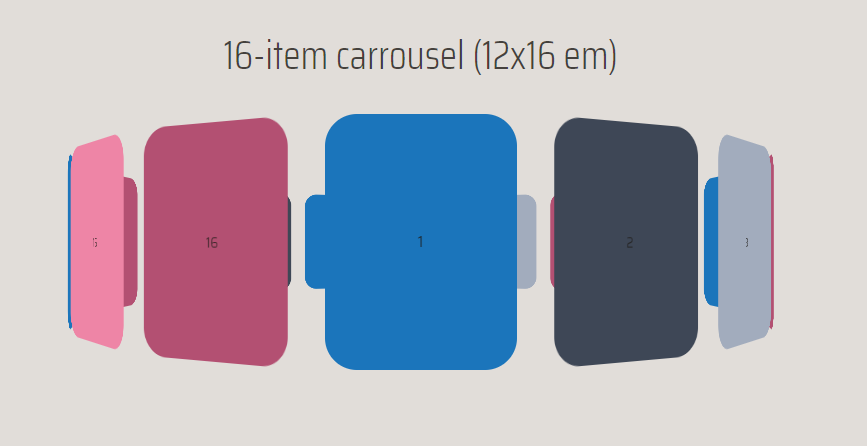

How I've come to know Sanne
During my propaedeutic year I've also had the privilege to get some lectures from him. What I noticed that lots of people spoke negative about him. I've personally know him as an excellent lecturer who can give feedback about the tinyest of detail, and every piece of criticism is backed up by sound arguments. I learned a lot from this criticism and I was therefore excited to get a new lecture from Sanne almost 2 years after our last sparring session.
Micro interactions
Sanne told us a bit about micro interactions. This was something he had told us before, but it was nice to have a refresh. He told us that the first thing you need to do is to understand what the user needs at a given time/page on your website. A micro interaction is something that makes the experience more pleasurable. If you manage to understand your users needs and create appropriate micro interations to accommodate to those needs, it's likely you'll create a positive association to your product.
Defining micro transactions
He showed us a diagram from Dan schaffer. According to Dan schaffer a micro interaction is definined as following:
- A signiture moment in a digital product
- A product based around one micro interaction
- People see interaction with a digital product as a series as micro interactions
Experimenting with CSS
It should look natural
Sanne showed some of the work his students made during his course 'Playing with CSS'. During this course he instructed his students to make a css animation. The important note here was that movement should look natural. He told us that movement often isn't linear in the natural world. Linear movement often looks robotic and therefore man-made.
Look at the atronaut from the image below. Every movement has a natural touch. The hand and legs movement isn't linear and you get a sense of gravity due to the astronaut is slowly moving up and down, again in a non-linear way. More example from his students can be found at his website.
CSS is powerful
Another example Sanne had showed was something he has built himself. He showed us a carousel that's get rendered using CSS and Javascript. Sanne told us how proud he was that he achieved all of this while only using JS to create the elements based on user input. At first it looks simple, but there were some very complex calculations behind it to render it in 3D. You can also change a lot from the basic carousel like adding reflections, borders, easing, direction and the amount of elements it will generate. It's also surpising performant. Even with hundreds of elements the elemets still renders really fast. I was truly amazed by this.  His carousel generator can be found on his website.